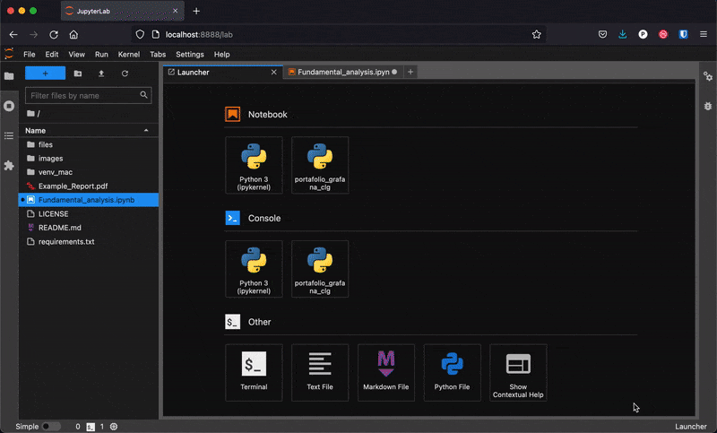
Table of Contents
This post will explain how I built a python script that creates a financial report of a public company in a pdf format. It's purpose is to use it as part of a stock selection process for an investment portfolio.
It will explain in detail how the report works and how it was made. If you want to skip to the source code, you can jump to the GitHub repository here.
You can also see some example reports created with the script.
The goal of the financial report
When investing in stocks, it's best to invest in profitable companies that will preserve investors capital and increase it over time.
To do that, we must examine a company's financial position using financial statements and other financial metrics.
Fortunately, public companies are required to report their financial information to the public periodically.
The goal of the project was to produce an automatic report with python that allows investors to analyze any public company quickly and make smarter investment decisions.
Diversification is the only way of reducing risk without lowering returns.
This automated approach saves hours of manual data collection and analysis, while ensuring consistency and accuracy in financial reporting.
What the python script does
The python script creates a pdf financial report showing 5 years of history of the company being analyzed.
Here is a summary of the contents of the report:
- Description of the company
- Financial statements for the last 5 years:
- Income statement
- Balance sheet statement
- Cash flow statement
- Important financial metrics:
- Debt ratios
- Profit ratios
- Efficiency ratios
- Market ratios
- Other key metrics
- Charts:
- Income statement
- Balance sheet
- Cash flow statement
- Equity uses
The information is shown in both nominal terms ($), expressed in millions of USD, as a percentage of income, or as a percentage of assets (depending on the metric).
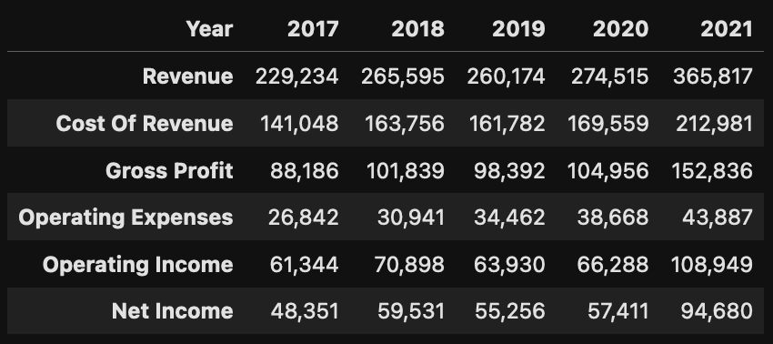
An example of an income statement expressed in millions of USD
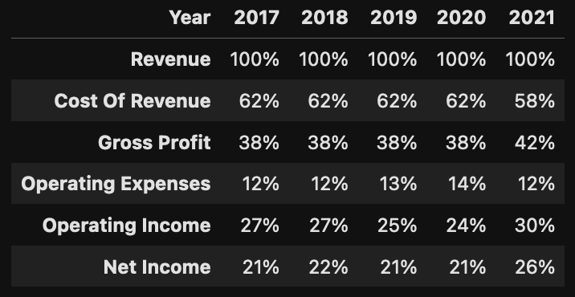
An example of the same income statement expressed as a percentage of revenue
Coding the report
The financial report is executed by running a file named 'fundamental_analysis.ipynb'. Ipynb files are jupyter notebook files that can run python scripts and are very popular in data science.
Jupyter notebook vs python script
I chose a Jupyter notebook instead of a python script to run the python code of the report because of its flexibility. Notebooks allow running parts of the code and can display the information as its executed, so it works well as a debugger.
Here you can see how the data frame can be explored, showing at a glance the available data.
I found that some of the financial data from the API still needs to be cleaned and occasionally produces errors.
With the notebook, I can go over that specific section without having to call the API several times (which is limited in the free version).
The notebook also contains an index at the top in markdown, which I use to navigate the script.
Each section heading contains an asterisk symbol '*' which links back to the index if you click on it.
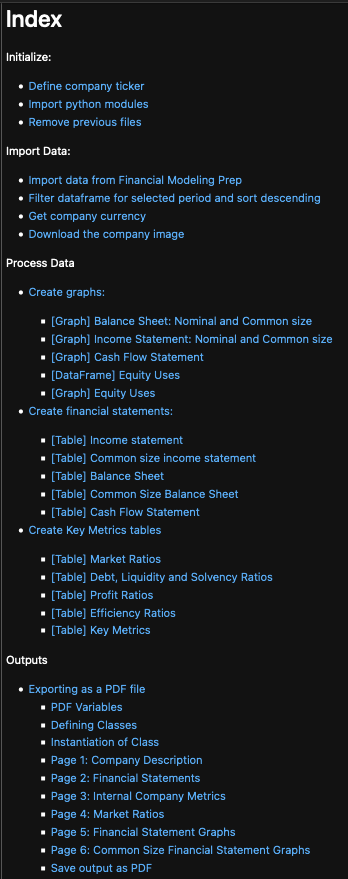
Image of the index of the Jupyter Notebook file
Fetching data from the API
To run the financial report script, I first had to get an API token from Financial Modeling Prep.
Financial Modeling prep is a stock data provider, that covers the NYSE, NASDAQ, AMEX, EURONEX, TSX, INDEXES, ETFs, MUTUAL FUNDS, FOREX and CRYPTO markets. If you are interested in stock investing or stock trading you should take a look.
They have a free version, which allows for 250 requests per day and covers all US markets, while a paid subscription gives coverage to the rest of international stocks and an unlimited number of requests.
You can add the API key directly in your script in the following section, but saving it as an environment variable is recommended for increased security. This is especially important if you plan to upload your code to a public repository.
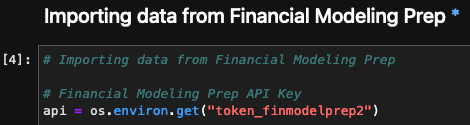
API key setup for accessing financial data
To call the API, I used a python library called requests, which fetches the data and saves the information as a JSON object.
Data transformations with Pandas
To transform the JSON object with financial data I used Pandas, an open source python library made for data analysis.
Some of the transformations I made were:
- Filtering only the necessary information for each financial table.
- Displaying the data in millions of USD to show numbers that are easier to understand.
- Transposing the data to show it in the same way financial statements are normally presented.
- Dividing the data and expressing it as ratios.
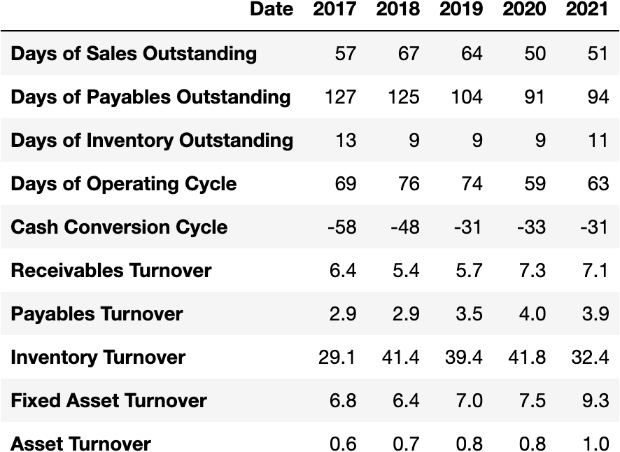
An example data frame showing market ratios for a company
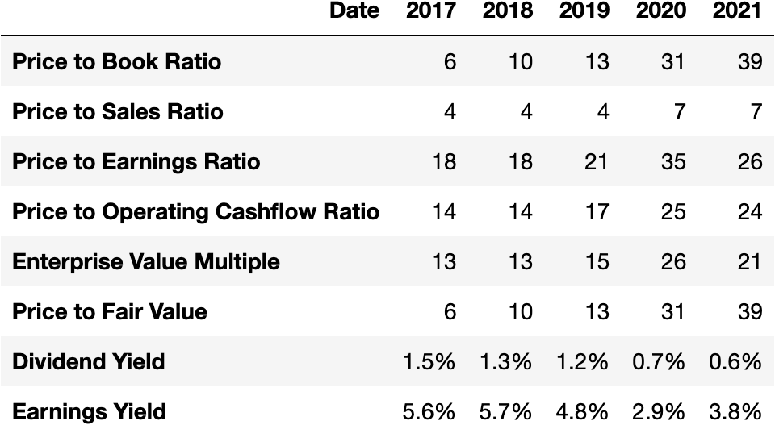
An example data frame table showing efficiency ratios for a company
Once the data was in the right format, I used a library called dataframe_image to save the tables as PNG files.
Data visualizations using plotly
I used the Plotly library to create charts that can show a clear picture of the company's health at a glance.
The free tier from Financial modeling prep returns 5 years of data, which can be useful to spot trends in companies as you can see below.
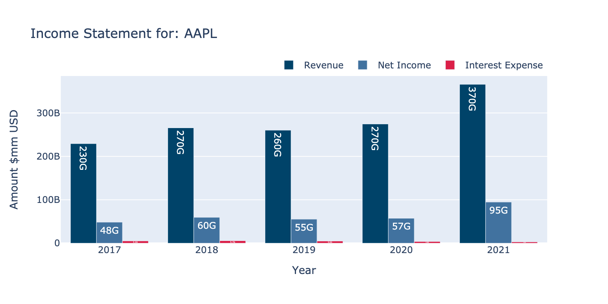
A graph showing sales, profits and interest expense of a company for the last 5 years
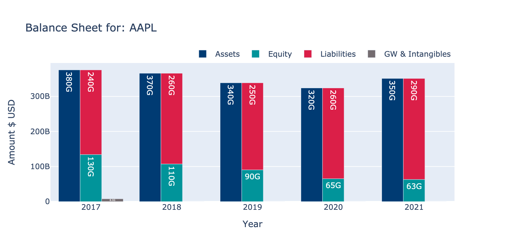
Another graph showing the assets, debts, and capital of a company for the last 5 years
Creating the PDF report using FPDF2
To create the report, I decided to go with a PDF file instead of a web-based format.
PDFs display the same content independent of the operating system, device or software, are convenient to share and are easy to protect. They are also the most common way of sharing data in a business environment.
I used the FPDF2 library, an open source python library that allows creating custom PDFs.
The library is easy to understand, very easy to customize and great for this kind of situation.
Running the script to create a report
After getting the API token, to create a report, I set up the file structure and installed the necessary python libraries.
Instructions to set up the file structure:
- Download the script.
- Download the required dependencies.
- In the same folder as the script add a folder named 'images'.
- Inside the folder 'images' add two folders named 'input' and 'output'.
- Inside the 'input' folder, add your logo.
- The current logo is named BS-Logo.png.
- Current logo is: width 306 pixels, height 188 pixels.
- When you substitute, make sure to update the filename inside the script or name your file BS-Logo.png
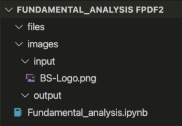
Image of the file structure
Installing python dependencies
Below is a list of the dependencies required by the script:
All modules are available from anaconda and pip.
I had some issues using the FPDF2 module from anaconda, so I ended up installing everything from pip.
I had some issues running Kaleido from a virtual environment, so I installed the libraries in the main python environment.
Selecting the company ticker
To run the report, simply change the company ticker and run all cells.
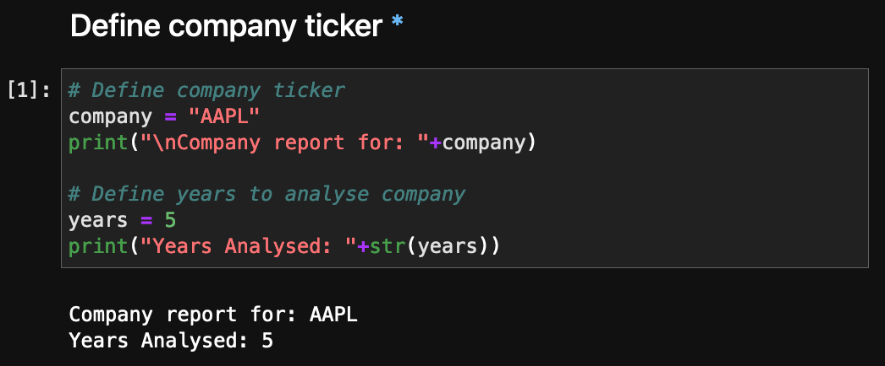
Simply change the company ticker and run all cells
Occasionally, the script will display an error message while executing.
Some common problems I found are:
- Choosing the wrong ticker (non us companies are only available in paid version).
- Incomplete information (sometimes data is missing for a year).
- Missing values sometimes reported as NA values, zero values, or another number.
- Sometimes company images are missing.
- Sometimes a metric is missing (e.g. name of the CEO)
If you get an error, explore the data to see if you can correct it. If not you can always comment out that section and get the rest of the report.
Once you have the code set up, running the script is straightforward:
Python
# Initialize the report generator
generator = FinancialReportGenerator(api_key='your_api_key_here')
# Fetch data for a company (e.g., Apple)
ticker = 'AAPL'
company_data = generator.fetch_company_data(ticker)
# Calculate financial metrics
metrics = generator.calculate_financial_metrics(company_data)
# Create visualizations
charts = generator.create_visualizations(company_data, metrics)
# Generate PDF report
report_path = generator.generate_pdf_report(ticker, company_data, metrics, [charts])
print(f"Financial report generated: {report_path}")
Some example financial reports
Below are some links to company reports I made with the script.
Improvements to the financial report
There are many ways this report could be improved.
Here are a few ideas:
- Output an excel file along with the PDF.
- Analyze quarters instead of full years.
- Analyze rolling years.
- Analyze more years at a time.
- Graph historical PE ratios.
- Improve the report presentation.
- Compare the company vs. its sector.
This list is not comprehensive, rather just a starting point.
If you are planning on using the report for investment purposes, remember that fundamental analysis is only part of a stock selection process. Other metrics, both qualitative and quantitative, need to taken into account before investing in a company.
Final thoughts
I hope you enjoyed the post and found it useful.
If you decide to try it out, feel free to contact me if you have any problems or suggestions.
You can check out my other projects here.
Pablo.
Get in touch!
I'm currently open to work and I'd be happy to chat.
Feel free to reach out if you are interested in what I can bring
to your project or team.